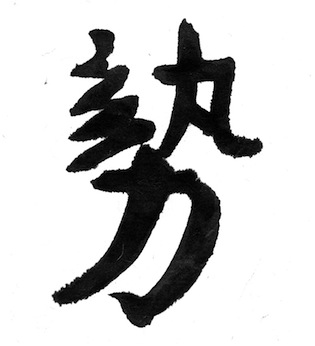
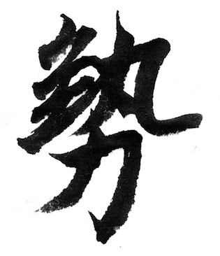
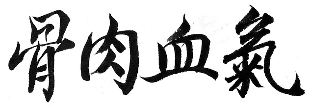
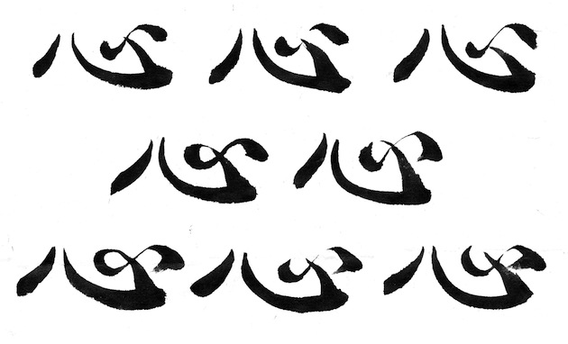
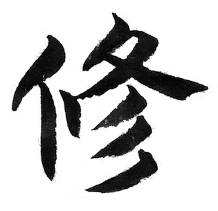
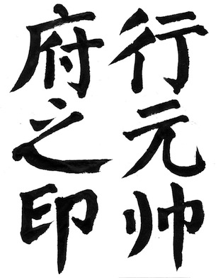
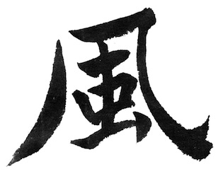

Nathaniel Flagg
Like Words From the Mouth of Time
Chinese Calligraphy in Motion
I came to China a few months ago to study Chinese calligraphy, or what is called shufa, “the art of writing”. I sought to explore how calligraphy, a manual craft, directly indicates the hand of the calligrapher behind the work and can be read in real time as a performance. The calligraphy brush is extremely sensitive to changes in pressure, direction, and speed, and leaves behind a detailed imprint of the gestures of the calligrapher’s body. However, one of the first things I noticed when viewing calligraphic works in the flesh was not an experience of encountering a person behind the work, but a person in present company. There was a change in atmosphere; announcing an individual who should be visible only as the author of the traces left behind on the page. What informs this is the perception of change. I watch the change in the movement of calligraphic gestures from stroke to stroke and from character to character, sensing my attention flowing across graphic moments on the page. The sensation of meeting an invisible person is borne from our own visual comprehension of the forms before us, wherein we explore calligraphic gestures made by the hands of the artist through the memory of our own gestures, our perceptions expanding to embrace the arrival of a new character within ourselves.
People leave marks everywhere. Daily life, particularly in China, is outin the open and public places often feel very intimate. In alleys and under the outcroppings of buildings, I sometimes notice minor assemblages of human activity: cabbages freshening on straw mats, stacks of buckets, a string of hung laundry accompanied by slabs of curing meat, a pair of shoes leaning against a wall, inched up on their toes like listless children. They are scraps of life put aside, poised and ready to be used again. In a sense they are still in use, they stand at attention, ready to be picked up and reinitiated into a galaxy of work. They are still attached to the people who use them as satellites of their bodies, a piece of their lives momentarily at rest.
When one writes calligraphic characters, there also is a putting aside of the pieces of oneself, stroke by stroke. Each push of the brush to the paper is an indication of pressure, speed, and direction that discloses the form of the generative gesture from the calligrapher’s hand. Few characters are made of only one stroke. Characters are aggregates of movements that follow one another, responding to the previous stroke and anticipating the stroke about to arrive.
 The word shi, meaning approximately “structure”, refers not only to the interdependency of the constituent parts of a form, but also the way in which the constituentparts of a form relate to each other as structural entries in time. Were the strokes in the character to be executed in reverse order, as it is on the opposite page, even though the placement of the strokes might be roughly the same, the character would be structurally incorrect since the flow has been turned on its head. In calligraphy, the writing of a character tells a visual story; it is revealing the passage across the structure, wherein the calligrapher’s hand changes from the start of the character to its end. Piecing together the strokes of a character, you leave a bundle of actions that refer and react to themselves, their resonances and repetitions, glissades, statements and rebuttals. The energy that one imparts onto each individual stroke gathers detail as it extends across all strokes. Characters display precisely that: a character of line, a habitual application of marks that speaks to a specific method of writing possessed by the artist, who is unseen but nonetheless present.
Calligraphy is frequently discussed in terms of bodies, bringing into parallel two languages regarding the systematic flows, connections and obstructions both in physiology and in art. In its production as well as its viewing, Calligraphy is a bodily experience. Like any exercise, it is important to bring to the page concentration and presence of mind. Unimpeded breathing is critical. Of equal importanceis not hesitating– a line made with decision is most important, one must accept the marks one makes as they surface. One of my teachers, Wang Dongling,is frequently photographedjumping into the air, his longhair in a wild snarl, his fingersand toes reaching, his facebright. In midair, the body can move in any direction, unimpeded. Such similarly spontaneous movements on the page let us see the body react against new environmental constraints, a transformed human presence that moves across the paper like a dance.
Poorly written characters or unsuitably executed strokes are called bing bi, meaning “ill marks”, and reflect a similar illness the calligrapher’s hand.
There are four criteria for healthy, vigorous characters: gu, rou, xue, qi, “bone, flesh, blood, and chi”. The first two refer to graphic philosophies: “bone” refers to proportion and composition; “flesh” refers to graphic weight. Again, these metaphors in calligraphy are strongly correlated to qualities possessed by calligraphers. Indolent, heavy characters suggest a lazy, corpulent calligrapher; thin, shivering strokes suggest a calligrapher who is frail and timid. These are usually unrigorous assumptions, but not devoid of meaning. They point directly to the phenomenon of the artist’s body being visible within the work.
“Blood” and qi are connected concepts and refer to the way in whichthe characters flow together, the collective dynamism of their constituent parts and their relationship to a text. Blood and qi do not only flow within the individual characters, but across an entire field of characters, so that calligraphic works themselves can be said to have the very energetic character of the body. Reading or viewing calligraphic work is said to be analogous to taking a pulse, measuring the vitality of an organism and discovering the nature of its xin, or “heart”, the energetic nexus of a human body.
The Feicao Shu, a treatise on calligraphy from the Eastern Han dynasty reads: “All men differ in their qi and xue, and vary in their sinew and bones; the ‘heart-mind’xin may be dispersed or dense; the hand may be skilled or clumsy, the beauty or ugliness in calligraphy is in the ‘heart-mind’ and the hand.” The kinetics of calligraphy produce a reflection of a human body that is palpable, revealed in terms that are not iconic, but instead index the body’s patterns of movement.

However, while calligraphic works may infer bodies, the relationship is not precise. An unexpected drip of water may create blurs and clouds that do not denote the intention of the calligrapher. The hairs of the brush may split, creating an unexpected doubling of strokes or a stray paper fiber may interrupt the brush’s path, leaving a blank spot in the middle of a stroke. The materials themselves assert their own creative voice in the production of a calligraphic work, diluting the orthography of the artist’s gestureand apparent visual result. On an even more basic level, the calligrapher’s gestures may not strictly be the makers of the marks that are witnessed at a present moment. Many calligraphic works, particularly older ones, are engravings or rubbings of engravings that have been taken into the hands of diligent copyists who hew a simulacrum of an original work by tedious, repetitive gouges in stone. The very calligraphy here has passed through several different media before having been reproduced in its current form– written, then scanned, digitally adjusted, and finally printed in multiple. Yet, all these stray interjections, adjustments and errors are meant to stand for the presence of a person, though by this time that person has beenso compromised as to be wholly transformed. In imagining the artist who produced the marks in question, we conjure a “person” of our own invention.
When I studied seal carving, calligraphy’s sister art of insignia crafting, my perpetual directive was to take my knife and review the forms I had carved, to adjust the weight of the marks, their proportions and their clarity.
The term used to describe this action was xiu, or “retracing.” Xiu refers to ornamentation orembellishment, but it also means to study or review. I would xiu my seals, but the craftsmen in their tent-like booths a few blocks away would also xiu your bicycle if it needed to be fixed. Xiu is both the study of a system and extrapolation or improvement on that system.
The designs on some seals are so ornate that immediate recognition of the character at hand is all but impossible. Strokes are stretched and then crumpled on themselves in visual labyrinths that obscure both the stroke’s beginning and end. The image of the maze is an effective charm in cultures all over the world. A common purpose is the neutralization of demons by transfixing them; trying to decipher the maze, they become locked within it, never fully able to unravel its true dimension. However, when we are viewing these shapes we are not trapped, we spring away having gone briefly on a journey to someplace new.
Reading, writes the anthropologist Tim Ingold, is a process of navigating a strange place. We make our way by noticing those features with which we are familiar. In the tracing of ornamental written words, we recount our memory and understanding of a system of visual and linguistic forms.  We mirror the forms on paper within our minds until we can identify them at last amid a repository of previously encountered situations– though sometimes, amidst ambiguity, the symbol can possess several distinct linguistic entries at once.Such labyrinths do not entrap, but instead challenge us to experiment with our memories within an immediate environment. By analyzing the rhythm of the changes before us and relating them to prior encounters with such patterns, we understand the logic ofa visual register implied bya form at present, as wellas a new dimension to the communicative act. The personwe meet in the calligraphic work emerges not from without, but from within ourselves, a redefinitionof form based on our own perception, present and prior.
Jacques Rancière writes that the artistic image “discovers a different resemblance en route – a resemblance that defines the relation of being to its provenance and destination, one that rejects the mirror in favorof the immediate relationship between progenitor and engendered”. Asa character is recreated, its image is adjusted and dispelled in favor of another image, one occurring immediately beneath your eyes. You can feel your very idea of the word stretching. In Chinese, this is described as a kind of energy transference, a resonance between what you already know and what you are about toknow.
The word in Chinese for this is feng, which meansliterally “wind”, thoughperhaps in this context itmight better be describedas a “current” – the exterioraspects of qi that shift theinterior perceptions of thebody. Feng describes an opening, the distance between viewer and work, which is in constant flux between reaching eye and receiving work. As the two approach one another, they also draw apart, the eye moving across the changing face of the paper, taking in the new images as soon as it can grasp them. The words emerge as physical sensations, drawing themselves across time.
In reading a work of calligraphy in terms of gestures, we imagine anew body for ourselves within those gestures. The ineffable feeling that someone is there before you in witnessing a calligraphic work is not some ghost of the person attached to the piece, but instead an incipient self, an energetic and perceiving self, borne out of contact with traces of another habit of activity. In a sense, calligraphy is not a two-dimensional art, but a kind of sculpture. In addition to shaping a graphic image, it reforms one’s very capacities of description. Characters, like a hand outstretched, arean invitation to a new possibility of figurative experience, an invitation to inhabit the “heart-mind” of another.